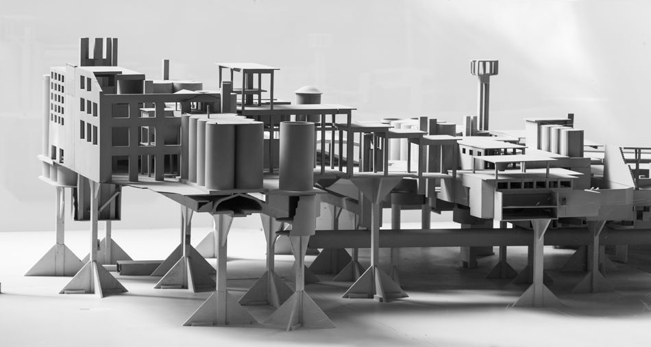

Located in the outskirts of Barcelona, the repurposed cement factory La Fábrica is home to the Taller de Arquitectura (RBTA) and the Bofill family. Here we develop our distinct vocabulary to interpret a changing world, nurturing the competence and cultural sensitivity of our multitalented team. From polluting industrial settlement to unmatched laboratory of ideas, La Fábrica represents the built manifesto of RBTA, its legacy and headquarters.